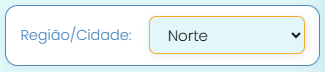
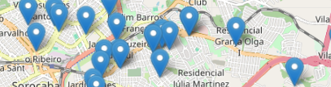
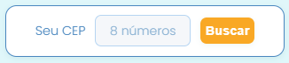
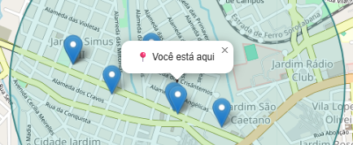

.png)
Olá! Seja Bem-vindo(a) ao nosso Mapa de Pontos de Coleta do
Projeto TamPets Sorocaba!
Ficamos muito felizes que queira se juntar à nossa corrente do bem de ajuda aos animais
Você já usou nosso mapa de pontos de coleta alguma vez?
Como encontrar um
ponto de coleta?
Você pode buscar de duas formas:
📍 Buscar por Região/Cidade
1. Neste menu, selecione sua região ou cidade no filtro.
2. Clique em Buscar e pronto! Todos os pontos da região selecionada aparecerão.
📍 Buscar por Distância (CEP)
1. Digite seu CEP no campo indicado.
2. Selecione a distância desejada
(1 km, 5 km, 10 km)
3. Clique em Buscar onde você inseriu seu CEP
Para saber mais informações sobre os Pontos de Coleta
Selecione um ponto no mapa para ver:
- Endereço completo
- Horário de funcionamento
- Como chegar via Google Maps
📍 Buscar por Distância (CEP)
4. Assim o mapa buscará e exibirá apenas os pontos de coleta localizados em um raio de 1km, 5km ou 10 kms a partir do CEP informado.
Para trocar a distância é só usar o seletor, não precisa digitar o CEP de novo, ok? (: